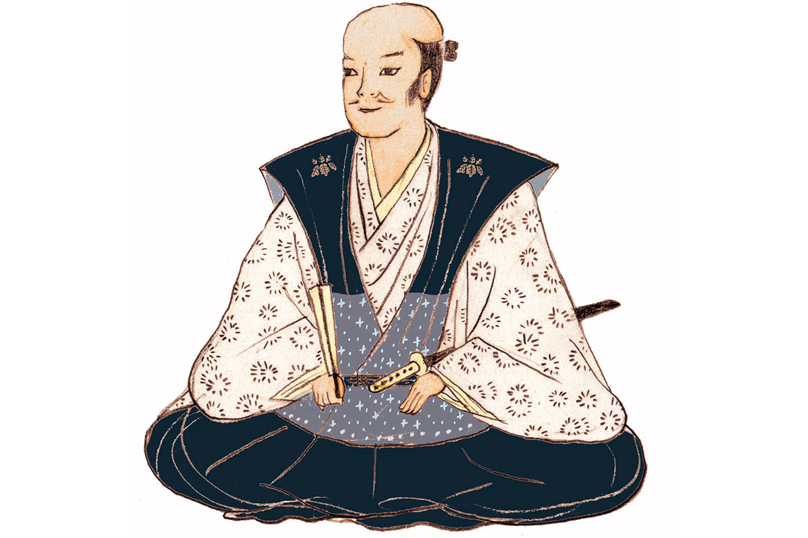
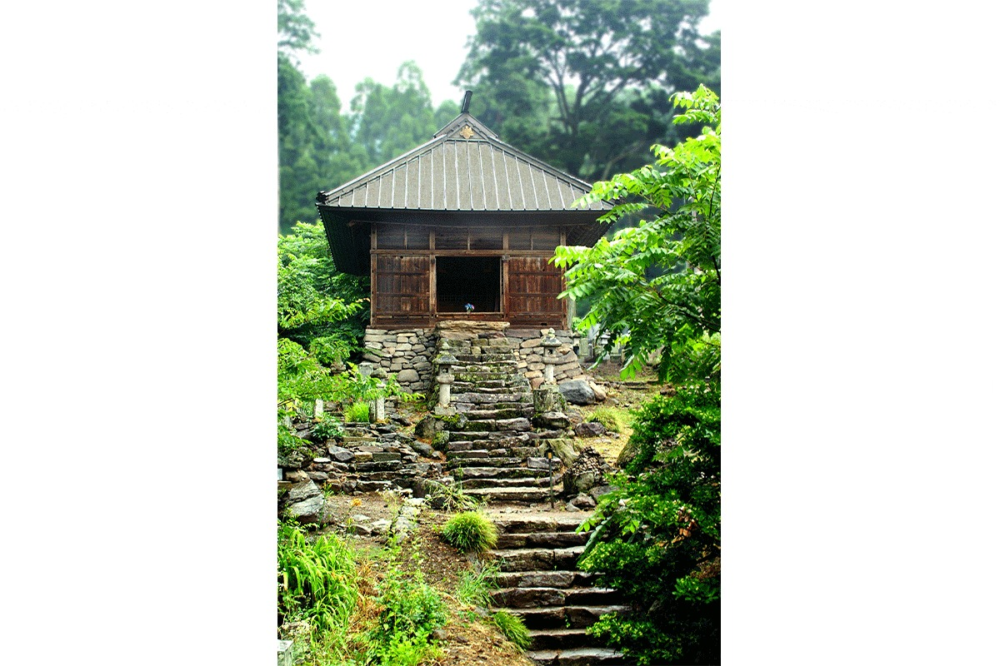

Префектура Айти · Ама · история
Масанори Фукусима: самый буйный воин Хидэёси родом из Овари

Масанори Фукусима слыл грубияном и пьяницей, но в бою не знал страха и стал одним из лучших полководцев Хидэёси Тоётоми. Родился он в деревне к западу от нынешней Нагои, и память о нём здесь хранят до сих пор.
Эпоха
Век воюющих провинций
С конца XV до конца XVI века Япония жила в войнах. Сёгунат Муромати окончательно потерял власть, и вместо прежних наместников по всей стране поднялись местные военные правители. Эпоха Сэнгоку, «эпоха воюющих провинций», дала Японии больше всего полководцев, о которых и сегодня рассказывают легенды. Один из самых колоритных среди них Масанори Фукусима.
Он прожил с 1561 по 1624 год и родился в провинции Овари, на западе нынешней префектуры Айти. Мальчиком его звали Итимацу, имя Масанори он взял позже. Главной женой его стала Сёун-ин, дочь самурая, а одной из младших жён Сёсэн-ин, приёмная дочь Иэясу Токугавы (1543–1616), будущего основателя сёгуната Эдо.

Характер
Грубиян, который боялся жены
Масанори вспоминают прежде всего как буяна, и рассказы о его выходках начинаются с детства. Подравшись однажды со взрослым, мальчишка отделал противника стамеской. Пил он без всякой меры и во хмелю становился опасен. Мать его, как считается, приходилась тёткой Хидэёси Тоётоми (1537–1598), полководцу из Овари, который позже объединил Японию. В войске родственника Масанори быстро пошёл вверх.
В битве при Сидзугатакэ в 1583 году он так отличился, что его записали в «семь копий Сидзугатакэ», самых храбрых воинов этого сражения. Говорили, что на поле боя он не отступал ни на шаг. Отступать ему приходилось дома: когда жена узнала о его измене, она бросилась на мужа с нагинатой, японской алебардой, и грозный полководец только и мог, что бегать от неё.
Правителем он оказался на удивление терпимым. В своих землях Масанори охотно чинил храмы и святилища и в то же время позволял проповедовать христианство.
Приказ, который нельзя было отменить
Историй о том, как Масанори подводило сакэ, сохранилось немало. Самая горькая такая: однажды, напившись, он велел одному из своих вассалов совершить сэппуку. Утром Масанори понял, что натворил, но исправить было уже нечего. Говорят, тогда этот грубый человек плакал навзрыд и без конца просил прощения.
Хроника
Жизнь в датах
- 1561 Масанори рождается в провинции Овари.
- 1578 Поступает на службу к Хидэёси, который тогда носил фамилию Хасиба. Первый бой: осада замка Мики в провинции Харима.
- 1582 В битве при Ямадзаки отличается при штурме замка Сёрюдзи.
- 1583 В битве при Сидзугатакэ сражает вражеского военачальника. Этот подвиг приносит ему славу.
- 1587 Участвует в походе Хидэёси на Кюсю.
- 1592 Переправляется на Корейский полуостров, когда Хидэёси начинает войну в Корее.
- 1600 В битве при Сэкигахаре встаёт на сторону Восточной армии Иэясу Токугавы.
- 1619 Тайфун и наводнение разрушают замок Хиросима: главную цитадель, вторую и третью линии укреплений, каменные стены. Масанори чинит их без разрешения сёгуната и тем нарушает «Законы военных домов», свод правил, которым сёгунат Токугава связал всех князей. Владения у него урезают, а самого переводят в далёкое княжество.
- 1624 Умирает от болезни в провинции Синано, нынешней префектуре Нагано.
Где увидеть
Места Масанори в Айти
Храм Кикусэн-ин и место рождения в Аме
Масанори родился в деревне Футацудэра, на территории нынешнего города Ама к западу от Нагои. Здесь стоит храм Кикусэн-ин, родовой храм семьи Фукусима, а к югу от него камень с надписью о месте рождения Масанори.
Храм Кикусэн-ин и памятный камень на месте рождения Масанори Фукусимы
- Адрес
- префектура Айти, Ама, Футацудэра Ясики, 69
Замок Киёсу
В 1595 году Хидэёси отдал Масанори замок Киёсу, одну из главных крепостей Овари, и тот правил здесь до 1600 года, пока после Сэкигахары не получил владения в Хиросиме. О замке и о совете, который здесь решил судьбу наследства Нобунаги Оды, мы рассказываем отдельно: Замок Киёсу.
Последний приют Масанори уже далеко от Айти: его усыпальница стоит за храмом Гансё-ин в городке Обусэ, в префектуре Нагано. О ней мы рассказываем в статье о Масанори Фукусиме в Нагано.
